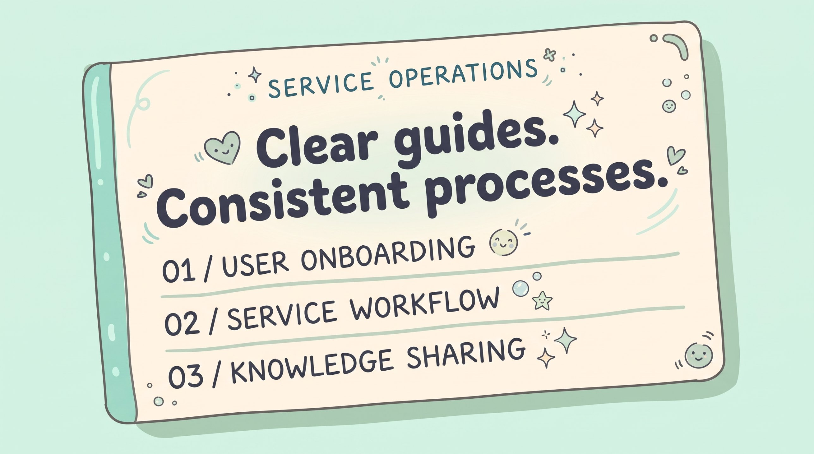
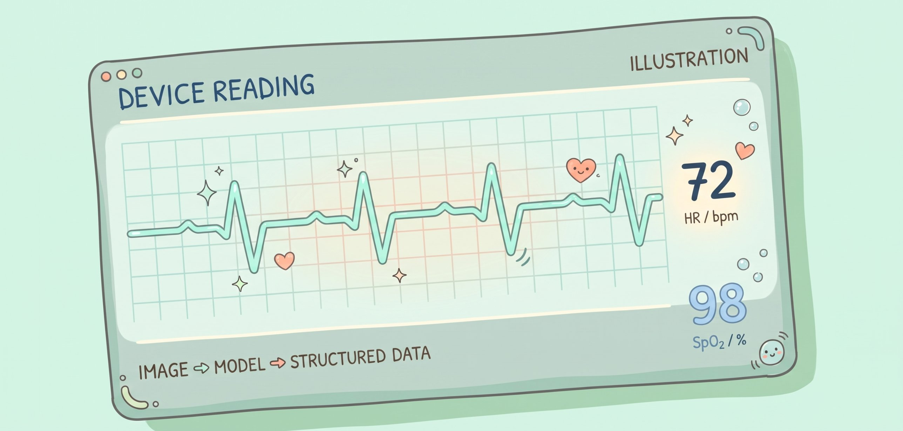

Medical AI service workflows
Organizing scattered service information into onboarding guides and multilingual FAQs, so users can start and use a medical AI service.
Cross-team communication · User needs · Process design
From service operations to research,
each built on a healthcare need.

Organizing scattered service information into onboarding guides and multilingual FAQs, so users can start and use a medical AI service.
Cross-team communication · User needs · Process design

Using multimodal models to read medical device screens, so a photo of a monitor can become structured data.
User needs · Error cases · Evaluation
I am interested in healthcare workflows, user needs, and AI projects.